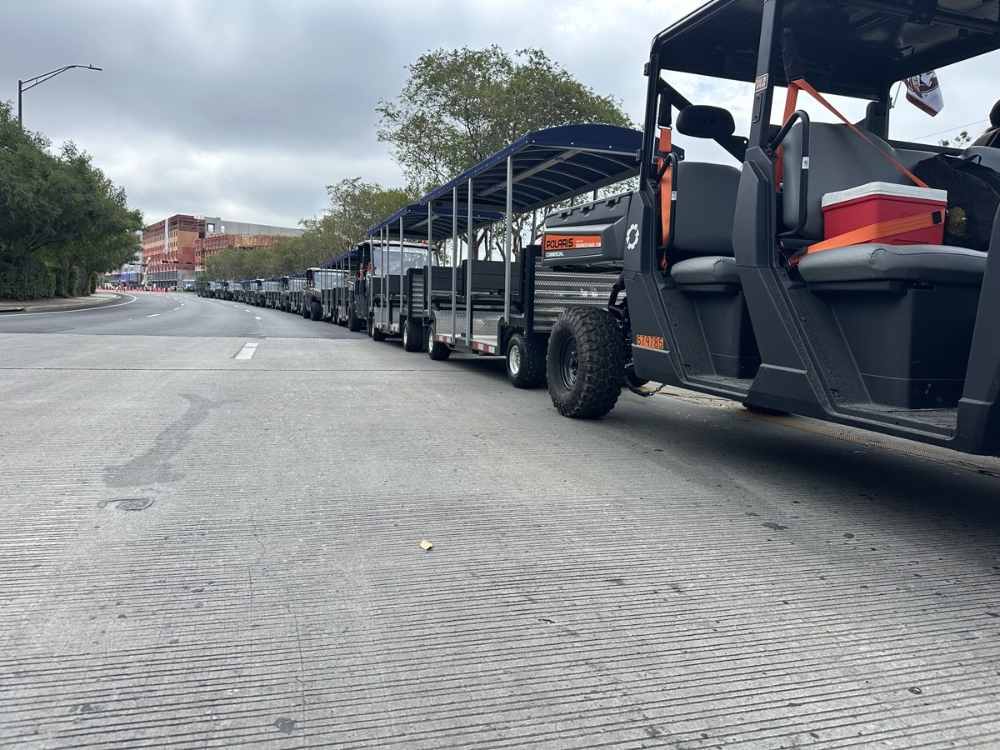

Convention centers
Move attendees seamlessly.
Across your entire campus.
Large conventions sprawl across multiple halls, parking structures, and partner hotels. Golf carts can't keep up. Shuttle buses are overkill. FlexTram moves up to 27 attendees per trip with one driver on a continuous loop — connecting every touchpoint of your event.
The problem
What your current shuttle
is really costing your event
The solution
One continuous loop.
Every venue connected.
FlexTram is a convention center shuttle designed for multi-venue events. A single compact tram connects exhibit halls, parking structures, partner hotels, and overflow venues — carrying up to 27 attendees with one driver on a predictable, continuous loop.
Attendees always know where to board and when the next tram arrives. No hailing carts, no waiting for shuttle vans. The loop runs all day — from early registration through evening receptions — keeping your entire campus connected.
FlexTram is compact ( near building entrances), ADA accessible as standard, and scales to any event size. Add trams for your biggest conferences, reduce for smaller shows. Operators report 50-60% lower shuttle labor costs vs. van fleets.
Head to head
| Metric | Shuttle van | Golf cart (6-seat) | FlexTram |
|---|---|---|---|
| Attendees per trip | 12 | 6 | Up to 25 |
| Drivers for campus loop | 4–5 | 8–10 | 2 |
| Hotel-to-venue reliability | Unpredictable | Inconsistent | Fixed schedule |
| ADA accessible | Varies | No | Standard |
| Indoor/covered use | Large footprint | Limited | Compact, low profile |
| Event scalability | Fixed contract | Many vehicles | Scale per event |
What operators are saying
"Our convention campus spans 6 buildings and 3 partner hotels. FlexTram replaced our shuttle van fleet and attendee satisfaction with transportation jumped — they finally know exactly when and where the shuttle comes."
— Event operations director, major convention center (name withheld)
Specifications
Where we operate
Common questions
Can FlexTram connect convention center halls to partner hotels?
Yes. FlexTram runs a fixed loop between exhibit halls, parking, and partner hotels — carrying up to 27 attendees per trip. Attendees always know when the next tram arrives, eliminating the unpredictable shuttle van experience.
Can FlexTram handle registration day surges?
FlexTram excels at surge operations. With 27 passengers per trip and rapid turnaround, it clears parking surges significantly faster than golf cart or van fleets — keeping registration lines moving.
Can FlexTram operate inside covered convention areas?
Yes. FlexTram is compact and agile with .
Can we scale FlexTram for different event sizes?
Absolutely. Run more trams for your biggest trade shows, fewer for smaller conferences. FlexTram's rental options let you match fleet size to each event — no year-round commitment.
Is FlexTram ADA accessible for convention attendees?
ADA accessibility is standard on every FlexTram. Accessible boarding and appropriate aisle widths ensure all attendees can navigate the convention campus comfortably.
Big event coming up? Let's talk.
Tell us about your convention — venue layout, attendance, hotel partners — and we'll build a shuttle plan that keeps your campus connected and your attendees happy.
Other industries